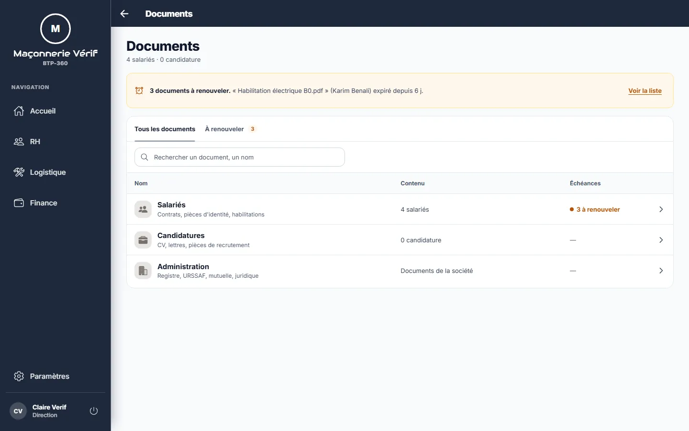
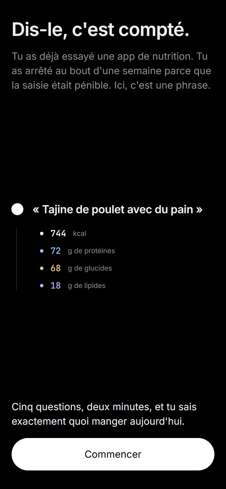
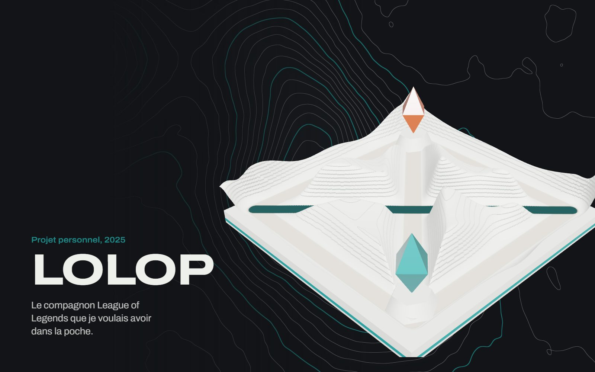
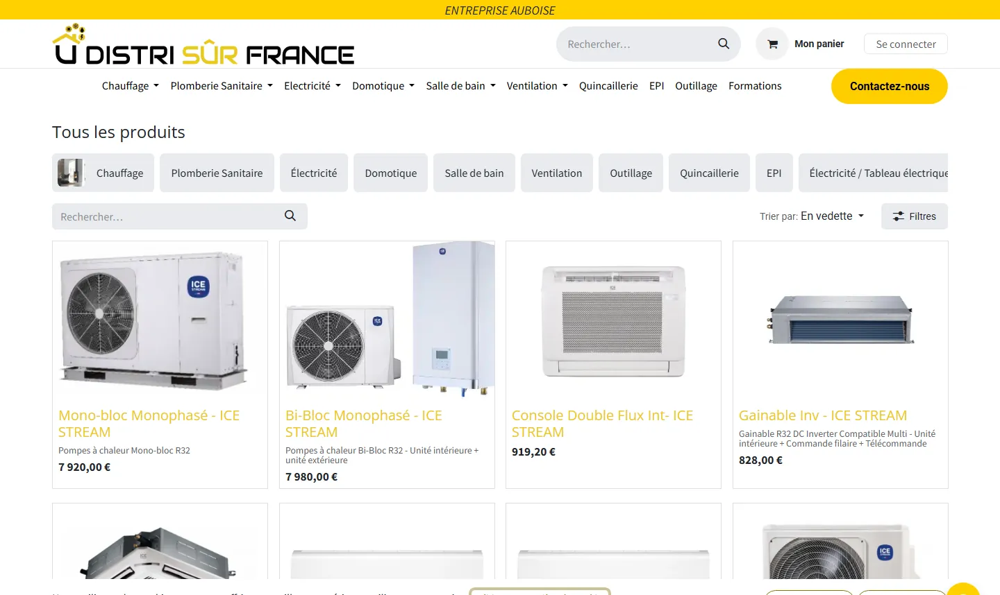
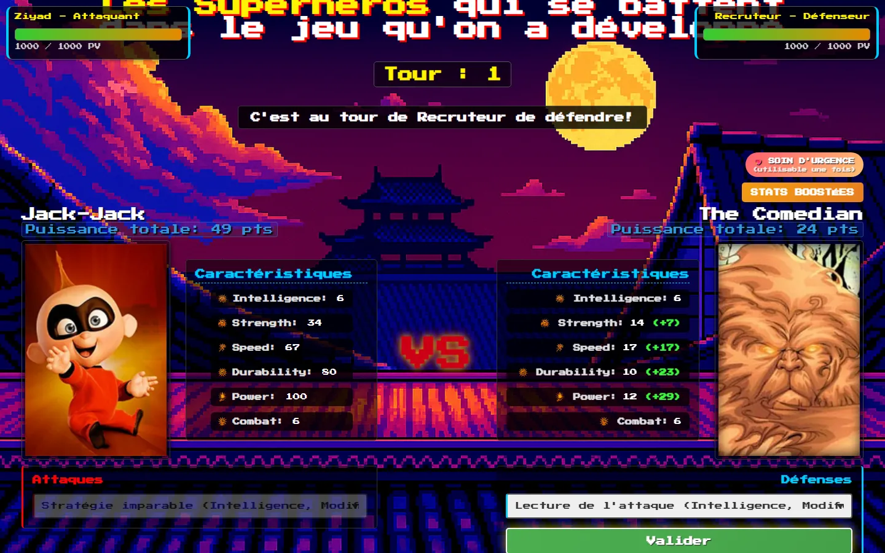
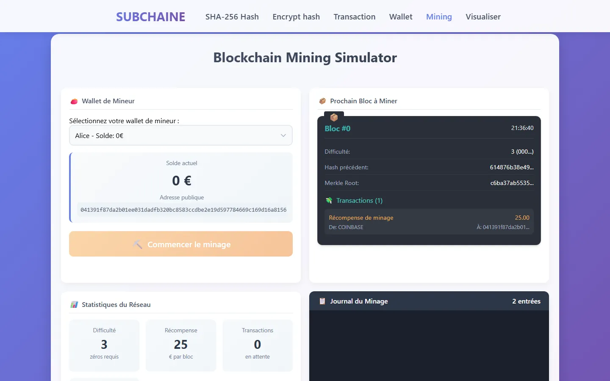
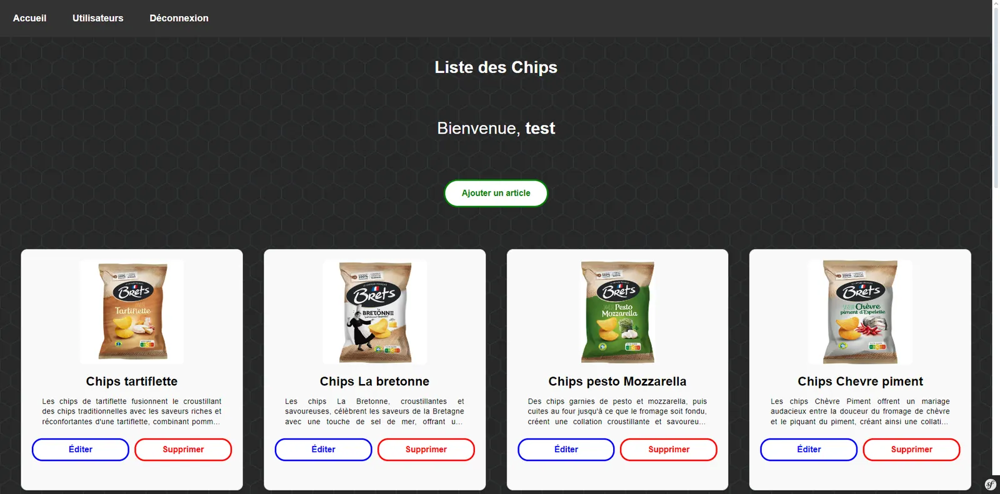
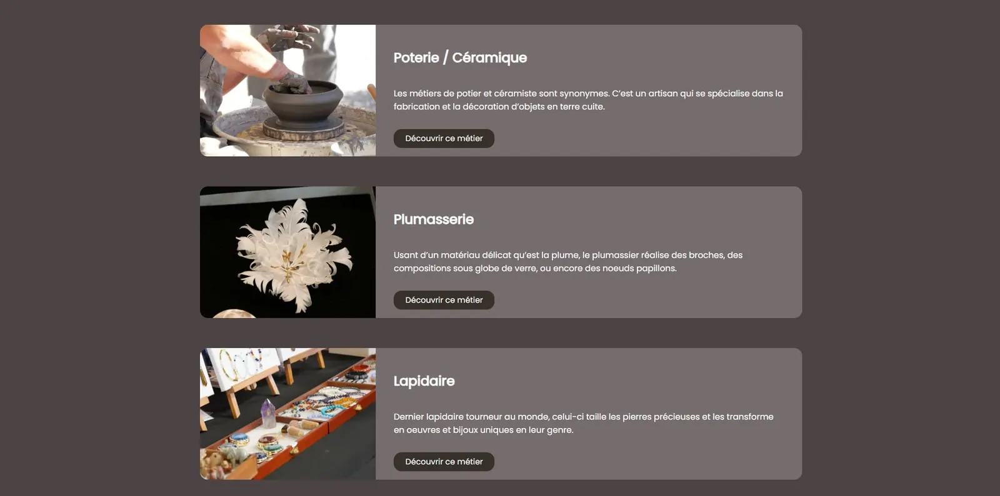
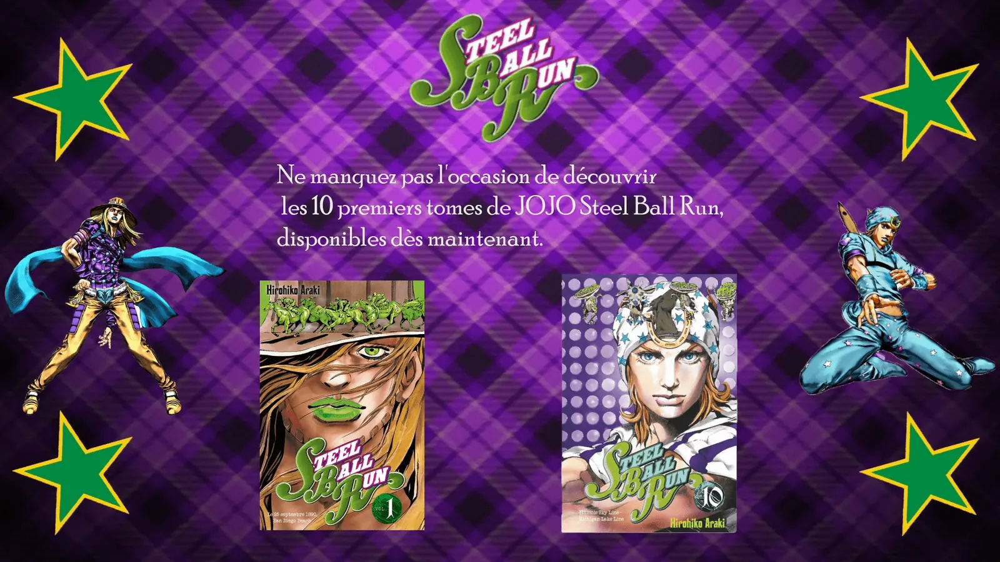

Le labo
35 projets et dépôts, posés sur une carte en relief qui se met à jour seule à chaque nouveau dépôt GitHub. Glissez pour vous déplacer, pincez ou utilisez Ctrl + molette pour zoomer, cliquez sur un nom pour ouvrir le projet.
Tous les projets
-

BTP-360 2026 -

SubForge 2026 -
 Funfair VR
2025
Funfair VR
2025
-
 Hotel Murder VR
2026
Hotel Murder VR
2026
-

lolop 2025 -
 Turaty Naturels
2025
Turaty Naturels
2025
-

Distri Sûr France 2024 -

ZABI 2025 -

SUBCHAINE 2025 -
 Réseau Sûr France
2023
Réseau Sûr France
2023
-
 JPO IUT de Meaux
2024
JPO IUT de Meaux
2024
-

Gestionnaire d’articles 2024 -

Web-documentaire artisans 2022 -

Pub Steel Ball Run 2022
Et les autres dépôts
- Prénoms et Hadoop Les prénoms les plus donnés par décennie, données INSEE, Hadoop Streaming et Pig. GitHub
- JoJo Maze Un labyrinthe 3D sous Unity, clin d'œil à JoJo's Bizarre Adventure. GitHub
- Wifi auto Un script qui se reconnecte seul au portail wifi. Né d’une vraie frustration. GitHub
- Portfolio Next.js Une version de portfolio en Next.js. GitHub
- Hôtel : gestion et paie Gestion hôtelière et paie des employés, à trois. GitHub
- QuizDown Un quiz en Pygame, à cinq. J'étais responsable de l'architecture. GitHub
- Scène 3D foot Base d'une scène 3D web servie par Node. GitHub
- FPS en three.js Un jeu de tir à la première personne dans le navigateur. GitHub
- Facture Android Mes débuts en Kotlin, autour de la facturation. GitHub
- Livre d'or Un livre d'or en PHP. GitHub
- Bouton WebGL Une scène Unity exportée en WebGL. GitHub
- Gestion académique Étudiants, cours, notes et moyennes pondérées. GitHub
- API REST employés Une API REST en PHP. GitHub
- AppScol Une application scolaire en Angular 17. GitHub
- Salaire brut en net Convertir un salaire brut en net, en direct. GitHub
- Calculateur d'IMC Calculer son indice de masse corporelle. GitHub
- Portfolio V2 Un ancien portfolio, pour mesurer le chemin. GitHub
- Mini Twitter Un clone simplifié de Twitter. GitHub
- Site Minecraft Un site de fan : constructions et redstone. GitHub
- GymBud Une application pour trouver un partenaire d'entraînement : swipe, profils sportifs, messagerie. Code privé
- Magasin VR Un showroom en réalité virtuelle pour se promener entre les produits. Code privé